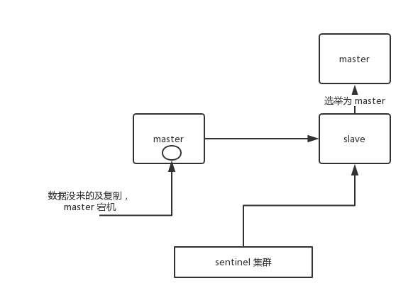
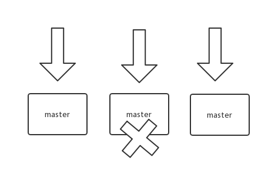

Redis
这是六则或许对你有些许帮助的信息:
⭐️1、阿秀与朋友合作开发了一个编程资源网站，目前已经收录了很多不错的学习资源和黑科技（附带下载地址），如过你想要寻求合适的编程资源，欢迎体验以及推荐自己认为不错的资源，众人拾柴火焰高，我为人人，人人为我🔥！
2、👉23年5月份阿秀从字节跳动离职跳槽到某外企期间，为方便自己找工作，增加上岸几率，我自己从0开发了一个互联网中大厂面试真题解析网站，包括两个前端和一个后端。能够定向查看某些公司的某些岗位面试真题，比如我想查一下行业为互联网，公司为字节跳动，考察岗位为后端，考察时间为最近一年之类的面试题有哪些？
4、😍免费分享阿秀个人学习计算机以来收集到的免费学习资源，点此白嫖；也记录一下自己以前买过的不错的计算机书籍、网络专栏和垃圾付费专栏；也记录一下自己以前买过的不错的计算机书籍、网络专栏和垃圾付费专栏
5、🚀如果你想在校招中顺利拿到更好的offer，阿秀建议你多看看前人踩过的坑和留下的经验，事实上你现在遇到的大多数问题你的学长学姐师兄师姐基本都已经遇到过了。
6、🔥 欢迎准备计算机校招的小伙伴加入我的学习圈子，一个人踽踽独行不如一群人报团取暖，圈子里沉淀了很多过去21/22/23/24/25届学长学姐的经验和总结，好好跟着走下去的，最后基本都可以拿到不错的offer！如果你需要《阿秀的学习笔记》网站中📚︎校招八股文相关知识点的PDF版本的话，可以点此下载 。
21、如何解决Redis的并发竞争Key问题
所谓 Redis 的并发竞争 Key 的问题也就是多个系统同时对一个 key 进行操作，但是最后执行的顺序和我们期望的顺序不同，这样也就导致了结果的不同！
推荐一种方案：分布式锁（zookeeper 和 Redis 都可以实现分布式锁）。（如果不存在 Redis 的并发竞争 Key 问 题，不要使用分布式锁，这样会影响性能）
基于zookeeper临时有序节点可以实现的分布式锁。大致思想为：每个客户端对某个方法加锁时，在zookeeper上的 与该方法对应的指定节点的目录下，生成一个唯一的瞬时有序节点。
判断是否获取锁的方式很简单，只需要判断有 序节点中序号最小的一个。 当释放锁的时候，只需将这个瞬时节点删除即可。
同时，其可以避免服务宕机导致的锁 无法释放，而产生的死锁问题。完成业务流程后，删除对应的子节点释放锁。
在实践中，当然是从以可靠性为主。所以首推Zookeeper。
22、如何保证缓存与数据库双写时的数据一致性
首先说一句，你只要用缓存，就可能会涉及到缓存与数据库双存储双写，你只要是双写，就一定会有数据一致性的问题，那么你如 何解决一致性问题？
一般来说，就是如果你的系统不是严格要求缓存+数据库必须一致性的话，缓存可以稍微的跟数据库偶尔有不一致的 情况，最好不要做这个方案，最好将读请求和写请求串行化，串到一个内存队列里去，这样就可以保证一定不会出现不一致的情况。
串行化之后，就会导致系统的吞吐量会大幅度的降低，用比正常情况下多几倍的机器去支撑线上的一个请求。
最经典的缓存+数据库读写的模式，就是 预留缓存模式Cache Aside Pattern。
- 读的时候，先读缓存，缓存没有的话，就读数据库，然后取出数据后放入缓存，同时返回响应。
- 更新的时候，先删除缓存，然后再更新数据库，这样读的时候就会发现缓存中没有数据而直接去数据库中拿数据了。（因为要删除，狗日的编辑器可能会背着你做一些优化，要彻底将缓存中的数据进行删除才行）
互联网公司非常喜欢问这道面试题，因为缓存在互联网公司使用非常频繁。
在高并发的业务场景下，数据库的性能瓶颈往往都是用户并发访问过大。所以，一般都使用Redis做一个缓冲操作，让请求先访问到Redis，而不是直接去访问MySQL等数据库，从而减少网络请求的延迟响应。
23、数据为什么会出现不一致的情况？
这样的问题主要是在并发读写访问的时候，缓存和数据相互交叉执行。
一、单库情况下
同一时刻发生了并发读写请求，例如为A(写) B (读)2个请求
-
A请求发送一个写操作到服务端，第一步会淘汰cache，然后因为各种原因卡主了，不在执行后面业务(例：大量的业务操作、调用其他服务处理消耗了1s）。
-
B请求发送一个读操作，读cache，因为cache淘汰，所以为空
-
B请求继续读DB，读出一个脏数据，并写入cache
-
A请求终于执行完全，在写入数据到DB
总结：因最后才把写操作数据入DB，并没同步。cache里面一直保持脏数据
脏数据是指源系统中的数据不在给定的范围内或对于实际业务毫无意义，或是数据格式非法，以及在源系统中存在不规范的编码和含糊的业务逻辑。
二、主从同步，读写分离的情况下，读从库而产生脏数据
-
A请求发送一个写操作到服务端，第一步会淘汰cache
-
A请求写主数据库，写了最新的数据。
-
B请求发送一个读操作，读cache，因为cache淘汰，所以为空
-
B请求继续读DB，读的是从库，此时主从同步还没同步成功。读出脏数据，然后脏数据入cache
-
最后数据库主从同步完成
总结：这种情况下请求A和请求B操作时序没问题，是主从同步的时延问题(假设1s)，导致读请求读取从库读到脏数据导致的数据不一致
根本原因:
单库下，逻辑处理中消耗1s，可能读到旧数据入缓存
主从+读写分离，在1s的主从同步时延中，到从库的旧数据入缓存
24、常见的数据优化方案你了解吗？
一、缓存双淘汰法
- 先淘汰缓存
- 再写数据库
- 往消息总线esb发送一个淘汰消息，发送立即返回。写请求的处理时间几乎没有增加，这个方法淘汰了缓存两次。因此被称为“缓存双淘汰法“，而在消息总线下游，有一个异步淘汰缓存的消费者，在拿到淘汰消息在1s后淘汰缓存，这样，即使在一秒内有脏数据入缓存，也能够被淘汰掉。
二、异步淘汰缓存
上述的步骤，都是在业务线里面执行，新增一个线下的读取binlog异步淘汰缓存模块，读取binlog总的数据，然后进行异步淘汰。

这里简单提供一个思路
1.思路：
MySQL binlog增量发布订阅消费+消息队列+增量数据更新到Redis
1）读请求走Redis：热数据基本都在Redis
2）写请求走MySQL: 增删改都操作MySQL
3）更新Redis数据：MySQ的数据操作binlog，来更新到Redis
2.Redis更新
1）数据操作主要分为两块：
- 一个是全量(将全部数据一次写入到Redis)
- 一个是增量（实时更新）
这里说的是增量,指的是mysql的update、insert、delate变更数据。这样一旦MySQL中产生了新的写入、更新、删除等操作，就可以把binlog相关的消息推送至Redis，Redis再根据binlog中的记录，对Redis进行更新，就无需在从业务线去操作缓存内容。
25、Redis 的高并发和高可用是如何保证的？
这样的问题主要是在并发读写访问的时候，缓存和数据相互交叉执行。
Redis的主从架构模式
Rdis的主从架构模式是实现高并发的主要依赖，一般很多项目只需要一主多从就可以实现其所需要的功能。通常使用单主用来写入数据，单机几万 QPS；多从一般是查询数据，多个从实例可以提供每秒 10w 的 QPS。
一些项目需要在实现高并发的同时，尽可能多的容纳大量的数据，这时需要使用Redis 集群，使用Redis 集群之后，可以提供每秒几十万的读写并发。
Redis 高可用，如果是做主从架构部署，那么加上哨兵就可以实现，任何一个实例宕机，可以进行主备切换。
单机的 Redis，能够承载的 QPS 大概就在上万到几万不等。对于缓存来说，一般都是用来支撑读高并发的。
因此架构做成主从(master-slave)架构，一主多从，主负责写，并且将数据复制到其它的 slave 节点，从节点负责读。所有的读请求全部走从节点。这样也可以很轻松实现水平扩容，支撑读高并发。

Redis replication -> 主从架构 -> 读写分离 -> 水平扩容支撑读高并发
Redis replication 的核心机制
- Redis 采用异步方式复制数据到 slave 节点，不过 Redis2.8 开始，slave node 会周期性地确认自己每次复制的数据量；
- 一个 master node 是可以配置多个 slave node 的；
- slave node 也可以连接其他的 slave node；
- slave node 做复制的时候，不会 block master node 的正常工作；
- slave node 在做复制的时候，也不会 block 对自己的查询操作，它会用旧的数据集来提供服务；但是复制完成的时候，需要删除旧数据集，加载新数据集，这个时候就会暂停对外服务了；
- slave node 主要用来进行横向扩容，做读写分离，扩容的 slave node 可以提高读的吞吐量。
注意，如果采用了主从架构，那么建议必须开启 master node 的持久化，不建议用 slave node 作为 master node 的数据热备，因为那样的话，如果你关掉 master 的持久化，可能在 master 宕机重启的时候数据是空的，然后可能一经过复制， slave node 的数据也丢了。
另外，master 的各种备份方案，也需要做。万一本地的所有文件丢失了，从备份中挑选一份 rdb 去恢复 master，这样才能确保启动的时候，是有数据的，即使采用了后续讲解的高可用机制，slave node 可以自动接管 master node，但也可能 sentinel 还没检测到 master failure，master node 就自动重启了，还是可能导致上面所有的 slave node 数据被清空。
Redis 主从复制的核心原理
当启动一个 slave node 的时候，它会发送一个 PSYNC 命令给 master node。
如果这是 slave node 初次连接到 master node，那么会触发一次 full resynchronization 全量复制。此时 master 会启动一个后台线程，开始生成一份 RDB 快照文件，同时还会将从客户端 client 新收到的所有写命令缓存在内存中。
RDB 文件生成完毕后， master 会将这个 RDB 发送给 slave，slave 会先写入本地磁盘，然后再从本地磁盘加载到内存中，接着 master 会将内存中缓存的写命令发送到 slave，slave 也会同步这些数据。
slave node 如果跟 master node 有网络故障，断开了连接，会自动重连，连接之后 master node 仅会复制给 slave 部分缺少的数据。

主从复制的断点续传
从 Redis2.8 开始，就支持主从复制的断点续传，如果主从复制过程中，网络连接断掉了，那么可以接着上次复制的地方，继续复制下去，而不是从头开始复制一份。
master node 会在内存中维护一个 backlog，master 和 slave 都会保存一个 replica offset 还有一个 master run id，offset 就是保存在 backlog 中的。
如果 master 和 slave 网络连接断掉了，slave 会让 master 从上次 replica offset 开始继续复制，如果没有找到对应的 offset，那么就会执行一次 resynchronization 。
如果根据 host+ip 定位 master node，是不靠谱的，如果 master node 重启或者数据出现了变化，那么 slave node 应该根据不同的 run id 区分。
无磁盘化复制
master 在内存中直接创建 RDB ，然后发送给 slave，不会在自己本地落地磁盘了。只需要在配置文件中开启 repl-diskless-sync yes 即可。
| Bash | |
|---|---|
过期 key 处理
slave 不会过期 key，只会等待 master 过期 key。如果 master 过期了一个 key，或者通过 LRU 淘汰了一个 key，那么会模拟一条 del 命令发送给 slave。
复制的完整流程
slave node 启动时，会在自己本地保存 master node 的信息，包括 master node 的 host 和 ip ，但是复制流程没开始。
slave node 内部有个定时任务，每秒检查是否有新的 master node 要连接和复制，如果发现，就跟 master node 建立 socket 网络连接。然后 slave node 发送 ping 命令给 master node。
如果 master 设置了 requirepass，那么 slave node 必须发送 masterauth 的口令过去进行认证。master node 第一次执行全量复制，将所有数据发给 slave node。而在后续，master node 持续将写命令，异步复制给 slave node。

全量复制
- master 执行 bgsave ，在本地生成一份 rdb 快照文件。
- master node 将 rdb 快照文件发送给 slave node，如果 rdb 复制时间超过 60 秒（repl-timeout），那么 slave node 就会认为复制失败，可以适当调大这个参数(对于千兆网卡的机器，一般每秒传输 100MB，6G 文件，很可能超过 60s)
- master node 在生成 rdb 时，会将所有新的写命令缓存在内存中，在 slave node 保存了 rdb 之后，再将新的写命令复制给 slave node。
- 如果在复制期间，内存缓冲区持续消耗超过 64MB，或者一次性超过 256MB，那么停止复制，复制失败。
| Bash | |
|---|---|
- slave node 接收到 rdb 之后，清空自己的旧数据，然后重新加载 rdb 到自己的内存中，同时基于旧的数据版本对外提供服务。
- 如果 slave node 开启了 AOF，那么会立即执行 BGREWRITEAOF，重写 AOF。
增量复制
- 如果全量复制过程中，master-slave 网络连接断掉，那么 slave 重新连接 master 时，会触发增量复制。
- master 直接从自己的 backlog 中获取部分丢失的数据，发送给 slave node，默认 backlog 就是 1MB。
- master 就是根据 slave 发送的 psync 中的 offset 来从 backlog 中获取数据的。
heartbeat
主从节点互相都会发送 heartbeat 信息。
master 默认每隔 10 秒发送一次 heartbeat，slave node 每隔 1 秒发送一个 heartbeat。
异步复制
master 每次接收到写命令之后，先在内部写入数据，然后异步发送给 slave node。
26、Redis 如何才能做到高可用？
如果系统在 365 天内，有 99.99% 的时间，都是可以哗哗对外提供服务的，那么就说系统是高可用的。
一个 slave 挂掉了，是不会影响可用性的，还有其它的 slave 在提供相同数据下的相同的对外的查询服务。
但是，如果 master node 死掉了，会怎么样？没法写数据了，写缓存的时候，全部失效了。slave node 还有什么用呢，没有 master 给它们复制数据了，系统相当于不可用了。
Redis 的高可用架构，叫做 failover 故障转移，也可以叫做主备切换。
master node 在故障时，自动检测，并且将某个 slave node 自动切换为 master node 的过程，叫做主备切换。这个过程，实现了 Redis 的主从架构下的高可用。
27、Redis集于哨兵集群实现高可用？
哨兵的介绍
sentinel，中文名是哨兵。哨兵是 Redis 集群架构中非常重要的一个组件，主要有以下功能：
- 集群监控：负责监控 Redis master 和 slave 进程是否正常工作。
- 消息通知：如果某个 Redis 实例有故障，那么哨兵负责发送消息作为报警通知给管理员。
- 故障转移：如果 master node 挂掉了，会自动转移到 slave node 上。
- 配置中心：如果故障转移发生了，通知 client 客户端新的 master 地址。
哨兵用于实现 Redis 集群的高可用，本身也是分布式的，作为一个哨兵集群去运行，互相协同工作。
- 故障转移时，判断一个 master node 是否宕机了，需要大部分的哨兵都同意才行，涉及到了分布式选举的问题。
- 即使部分哨兵节点挂掉了，哨兵集群还是能正常工作的，因为如果一个作为高可用机制重要组成部分的故障转移系统本身是单点的，那就很坑爹了。
哨兵的核心知识
- 哨兵至少需要 3 个实例，来保证自己的健壮性。
- 哨兵 + Redis 主从的部署架构，是不保证数据零丢失的，只能保证 Redis 集群的高可用性。
- 对于哨兵 + Redis 主从这种复杂的部署架构，尽量在测试环境和生产环境，都进行充足的测试和演练。
哨兵集群必须部署 2 个以上节点，如果哨兵集群仅仅部署了 2 个哨兵实例，quorum = 1。
| Text Only | |
|---|---|
配置 quorum=1 ，如果 master 宕机， s1 和 s2 中只要有 1 个哨兵认为 master 宕机了，就可以进行切换，同时 s1 和 s2 会选举出一个哨兵来执行故障转移。但是同时这个时候，需要 majority，也就是大多数哨兵都是运行的。
| Text Only | |
|---|---|
如果此时仅仅是 M1 进程宕机了，哨兵 s1 正常运行，那么故障转移是 OK 的。但是如果是整个 M1 和 S1 运行的机器宕机了，那么哨兵只有 1 个，此时就没有 majority 来允许执行故障转移，虽然另外一台机器上还有一个 R1，但是故障转移不会执行。
经典的 3 节点哨兵集群是这样的：
| Text Only | |
|---|---|
配置 quorum=2 ，如果 M1 所在机器宕机了，那么三个哨兵还剩下 2 个，S2 和 S3 可以一致认为 master 宕机了，然后选举出一个来执行故障转移，同时 3 个哨兵的 majority 是 2，所以还剩下的 2 个哨兵运行着，就可以允许执行故障转移。
28、Redis 哨兵主备切换的数据丢失问题
导致数据丢失的两种情况
主备切换的过程，可能会导致数据丢失：
- 异步复制导致的数据丢失
因为 master->slave 的复制是异步的，所以可能有部分数据还没复制到 slave，master 就宕机了，此时这部分数据就丢失了。

- 脑裂导致的数据丢失
脑裂，也就是说，某个 master 所在机器突然脱离了正常的网络，跟其他 slave 机器不能连接，但是实际上 master 还运行着。此时哨兵可能就会认为 master 宕机了，然后开启选举，将其他 slave 切换成了 master。这个时候，集群里就会有两个 master ，也就是所谓的脑裂。
此时虽然某个 slave 被切换成了 master，但是可能 client 还没来得及切换到新的 master，还继续向旧 master 写数据。
因此旧 master 再次恢复的时候，会被作为一个 slave 挂到新的 master 上去，自己的数据会清空，重新从新的 master 复制数据。而新的 master 并没有后来 client 写入的数据，因此，这部分数据也就丢失了。

数据丢失问题的解决方案
进行如下配置：
表示，要求至少有 1 个 slave，数据复制和同步的延迟不能超过 10 秒。
如果说一旦所有的 slave，数据复制和同步的延迟都超过了 10 秒钟，那么这个时候，master 就不会再接收任何请求了。
- 减少异步复制数据的丢失
有了 min-slaves-max-lag 这个配置，就可以确保说，一旦 slave 复制数据和 ack 延时太长，就认为可能 master 宕机后损失的数据太多了，那么就拒绝写请求，这样可以把 master 宕机时由于部分数据未同步到 slave 导致的数据丢失降低的可控范围内。
- 减少脑裂的数据丢失
如果一个 master 出现了脑裂，跟其他 slave 丢了连接，那么上面两个配置可以确保说，如果不能继续给指定数量的 slave 发送数据，而且 slave 超过 10 秒没有给自己 ack 消息，那么就直接拒绝客户端的写请求。因此在脑裂场景下，最多就丢失 10 秒的数据。
29、sdown 和 odown 转换机制
- sdown 是主观宕机，就一个哨兵如果自己觉得一个 master 宕机了，那么就是主观宕机
- odown 是客观宕机，如果 quorum 数量的哨兵都觉得一个 master 宕机了，那么就是客观宕机
sdown 达成的条件很简单，如果一个哨兵 ping 一个 master，超过了 is-master-down-after-milliseconds 指定的毫秒数之后，就主观认为 master 宕机了；
如果一个哨兵在指定时间内，收到了 quorum 数量的其它哨兵也认为那个 master 是 sdown 的，那么就认为是 odown 了。
30、哨兵集群的自动发现机制
哨兵互相之间的发现，是通过 Redis 的 pub/sub 系统实现的，每个哨兵都会往 __sentinel__:hello 这个 channel 里发送一个消息，这时候所有其他哨兵都可以消费到这个消息，并感知到其他的哨兵的存在。
每隔两秒钟，每个哨兵都会往自己监控的某个 master+slaves 对应的 __sentinel__:hello channel 里发送一个消息，内容是自己的 host、ip 和 runid 还有对这个 master 的监控配置。
每个哨兵也会去监听自己监控的每个 master+slaves 对应的 __sentinel__:hello channel，然后去感知到同样在监听这个 master+slaves 的其他哨兵的存在。
每个哨兵还会跟其他哨兵交换对 master 的监控配置，互相进行监控配置的同步。
slave 配置的自动纠正
哨兵会负责自动纠正 slave 的一些配置，比如 slave 如果要成为潜在的 master 候选人，哨兵会确保 slave 复制现有 master 的数据；如果 slave 连接到了一个错误的 master 上，比如故障转移之后，那么哨兵会确保它们连接到正确的 master 上。
slave->master 选举算法
如果一个 master 被认为 odown 了，而且 majority 数量的哨兵都允许主备切换，那么某个哨兵就会执行主备切换操作，此时首先要选举一个 slave 来，会考虑 slave 的一些信息：
- 跟 master 断开连接的时长
- slave 优先级
- 复制 offset
- run id
如果一个 slave 跟 master 断开连接的时间已经超过了 down-after-milliseconds 的 10 倍，外加 master 宕机的时长，那么 slave 就被认为不适合选举为 master。
| Text Only | |
|---|---|
接下来会对 slave 进行排序：
- 按照 slave 优先级进行排序，slave priority 越低，优先级就越高。
- 如果 slave priority 相同，那么看 replica offset，哪个 slave 复制了越多的数据，offset 越靠后，优先级就越高。
- 如果上面两个条件都相同，那么选择一个 run id 比较小的那个 slave。
quorum 和 majority
每次一个哨兵要做主备切换，首先需要 quorum 数量的哨兵认为 odown，然后选举出一个哨兵来做切换，这个哨兵还需要得到 majority 哨兵的授权，才能正式执行切换。
如果 quorum < majority，比如 5 个哨兵，majority 就是 3，quorum 设置为 2，那么就 3 个哨兵授权就可以执行切换。
但是如果 quorum >= majority，那么必须 quorum 数量的哨兵都授权，比如 5 个哨兵，quorum 是 5，那么必须 5 个哨兵都同意授权，才能执行切换。
configuration epoch
哨兵会对一套 Redis master+slaves 进行监控，有相应的监控的配置。
执行切换的那个哨兵，会从要切换到的新 master（salve->master）那里得到一个 configuration epoch，这就是一个 version 号，每次切换的 version 号都必须是唯一的。
如果第一个选举出的哨兵切换失败了，那么其他哨兵，会等待 failover-timeout 时间，然后接替继续执行切换，此时会重新获取一个新的 configuration epoch，作为新的 version 号。
configuration 传播
哨兵完成切换之后，会在自己本地更新生成最新的 master 配置，然后同步给其他的哨兵，就是通过之前说的 pub/sub 消息机制。
这里之前的 version 号就很重要了，因为各种消息都是通过一个 channel 去发布和监听的，所以一个哨兵完成一次新的切换之后，新的 master 配置是跟着新的 version 号的。其他的哨兵都是根据版本号的大小来更新自己的 master 配置的。
27、Redis集群模式的工作原理是什么？
基本通信原理
集群元数据的维护有两种方式：集中式、Gossip 协议。Redis cluster 节点间采用 gossip 协议进行通信。
集中式是将集群元数据（节点信息、故障等等）集中存储在某个节点上。集中式元数据集中存储的一个典型代表，就是大数据领域的 storm 。
它是分布式的大数据实时计算引擎，是集中式的元数据存储的结构，底层基于 zookeeper（分布式协调的中间件）对所有元数据进行存储维护。

Redis 维护集群元数据采用另一个方式， gossip 协议，所有节点都持有一份元数据，不同的节点如果出现了元数据的变更，就不断将元数据发送给其它的节点，让其它节点也进行元数据的变更。

集中式的好处在于，元数据的读取和更新，时效性非常好，一旦元数据出现了变更，就立即更新到集中式的存储中，其它节点读取的时候就可以感知到；不好在于，所有的元数据的更新压力全部集中在一个地方，可能会导致元数据的存储有压力。
gossip 好处在于，元数据的更新比较分散，不是集中在一个地方，更新请求会陆陆续续打到所有节点上去更新，降低了压力；不好在于，元数据的更新有延时，可能导致集群中的一些操作会有一些滞后。
- 10000 端口：每个节点都有一个专门用于节点间通信的端口，就是自己提供服务的端口号+10000，比如 7001，那么用于节点间通信的就是 17001 端口。每个节点每隔一段时间都会往另外几个节点发送
ping消息，同时其它几个节点接收到ping之后返回pong。 - 交换的信息：信息包括故障信息，节点的增加和删除，hash slot 信息等等。
gossip 协议
gossip 协议包含多种消息，包含 ping , pong , meet , fail 等等。
- meet：某个节点发送 meet 给新加入的节点，让新节点加入集群中，然后新节点就会开始与其它节点进行通信。
| Bash | |
|---|---|
其实内部就是发送了一个 gossip meet 消息给新加入的节点，通知那个节点去加入我们的集群。
- ping：每个节点都会频繁给其它节点发送 ping，其中包含自己的状态还有自己维护的集群元数据，互相通过 ping 交换元数据。
- pong：返回 ping 和 meet，包含自己的状态和其它信息，也用于信息广播和更新。
- fail：某个节点判断另一个节点 fail 之后，就发送 fail 给其它节点，通知其它节点说，某个节点宕机啦。
ping 消息深入
ping 时要携带一些元数据，如果很频繁，可能会加重网络负担。
每个节点每秒会执行 10 次 ping，每次会选择 5 个最久没有通信的其它节点。当然如果发现某个节点通信延时达到了 cluster_node_timeout / 2 ，那么立即发送 ping，避免数据交换延时过长，落后的时间太长了。
比如说，两个节点之间都 10 分钟没有交换数据了，那么整个集群处于严重的元数据不一致的情况，就会有问题。所以 cluster_node_timeout 可以调节，如果调得比较大，那么会降低 ping 的频率。
每次 ping，会带上自己节点的信息，还有就是带上 1/10 其它节点的信息，发送出去，进行交换。至少包含 3 个其它节点的信息，最多包含 总节点数减 2 个其它节点的信息。
分布式寻址算法
- hash 算法（大量缓存重建）
- 一致性 hash 算法（自动缓存迁移）+ 虚拟节点（自动负载均衡）
- Redis cluster 的 hash slot 算法
hash 算法
来了一个 key，首先计算 hash 值，然后对节点数取模。然后打在不同的 master 节点上。一旦某一个 master 节点宕机，所有请求过来，都会基于最新的剩余 master 节点数去取模，尝试去取数据。
这会导致大部分的请求过来，全部无法拿到有效的缓存，导致大量的流量涌入数据库。

一致性 hash 算法
一致性 hash 算法将整个 hash 值空间组织成一个虚拟的圆环，整个空间按顺时针方向组织，下一步将各个 master 节点（使用服务器的 ip 或主机名）进行 hash。这样就能确定每个节点在其哈希环上的位置。
来了一个 key，首先计算 hash 值，并确定此数据在环上的位置，从此位置沿环顺时针“行走”，遇到的第一个 master 节点就是 key 所在位置。
在一致性哈希算法中，如果一个节点挂了，受影响的数据仅仅是此节点到环空间前一个节点（沿着逆时针方向行走遇到的第一个节点）之间的数据，其它不受影响。增加一个节点也同理。
燃鹅，一致性哈希算法在节点太少时，容易因为节点分布不均匀而造成缓存热点的问题。
为了解决这种热点问题，一致性 hash 算法引入了虚拟节点机制，即对每一个节点计算多个 hash，每个计算结果位置都放置一个虚拟节点。这样就实现了数据的均匀分布，负载均衡。

Redis cluster 的 hash slot 算法
Redis cluster 有固定的 16384 个 hash slot，对每个 key 计算 CRC16 值，然后对 16384 取模，可以获取 key 对应的 hash slot。
Redis cluster 中每个 master 都会持有部分 slot，比如有 3 个 master，那么可能每个 master 持有 5000 多个 hash slot。
hash slot 让 node 的增加和移除很简单，增加一个 master，就将其他 master 的 hash slot 移动部分过去，减少一个 master，就将它的 hash slot 移动到其他 master 上去。移动 hash slot 的成本是非常低的。客户端的 api，可以对指定的数据，让他们走同一个 hash slot，通过 hash tag 来实现。
任何一台机器宕机，另外两个节点，不影响的。因为 key 找的是 hash slot，不是机器。

Redis cluster 的高可用与主备切换原理
Redis cluster 的高可用的原理，几乎跟哨兵是类似的。
判断节点宕机
如果一个节点认为另外一个节点宕机，那么就是 pfail ，主观宕机。如果多个节点都认为另外一个节点宕机了，那么就是 fail ，客观宕机，跟哨兵的原理几乎一样，sdown，odown。
在 cluster-node-timeout 内，某个节点一直没有返回 pong ，那么就被认为 pfail 。
如果一个节点认为某个节点 pfail 了，那么会在 gossip ping 消息中， ping 给其他节点，如果超过半数的节点都认为 pfail 了，那么就会变成 fail 。
从节点过滤
对宕机的 master node，从其所有的 slave node 中，选择一个切换成 master node。
检查每个 slave node 与 master node 断开连接的时间，如果超过了 cluster-node-timeout * cluster-slave-validity-factor ，那么就没有资格切换成 master 。
从节点选举
每个从节点，都根据自己对 master 复制数据的 offset，来设置一个选举时间，offset 越大（复制数据越多）的从节点，选举时间越靠前，优先进行选举。
所有的 master node 开始 slave 选举投票，给要进行选举的 slave 进行投票，如果大部分 master node （N/2 + 1） 都投票给了某个从节点，那么选举通过，那个从节点可以切换成 master。
从节点执行主备切换，从节点切换为主节点。
与哨兵比较
整个流程跟哨兵相比，非常类似，所以说，Redis cluster 功能强大，直接集成了 replication 和 sentinel 的功能。
28、如何保证缓存与数据库的双写一致性？
你只要用缓存，就可能会涉及到缓存与数据库双存储双写，你只要是双写，就一定会有数据一致性的问题，那么你如何解决一致性问题？
Cache Aside Pattern
最经典的缓存+数据库读写的模式，就是 Cache Aside Pattern。
- 读的时候，先读缓存，缓存没有的话，就读数据库，然后取出数据后放入缓存，同时返回响应。
- 更新的时候，先更新数据库，然后再删除缓存。
为什么是删除缓存，而不是更新缓存？
原因很简单，很多时候，在复杂点的缓存场景，缓存不单单是数据库中直接取出来的值。
比如可能更新了某个表的一个字段，然后其对应的缓存，是需要查询另外两个表的数据并进行运算，才能计算出缓存最新的值的。
另外更新缓存的代价有时候是很高的。是不是说，每次修改数据库的时候，都一定要将其对应的缓存更新一份？也许有的场景是这样，但是对于比较复杂的缓存数据计算的场景，就不是这样了。如果你频繁修改一个缓存涉及的多个表，缓存也频繁更新。但是问题在于，这个缓存到底会不会被频繁访问到？
举个栗子，一个缓存涉及的表的字段，在 1 分钟内就修改了 20 次，或者是 100 次，那么缓存更新 20 次、100 次；但是这个缓存在 1 分钟内只被读取了 1 次，有大量的冷数据。实际上，如果你只是删除缓存的话，那么在 1 分钟内，这个缓存不过就重新计算一次而已，开销大幅度降低，用到缓存才去算缓存。
其实删除缓存，而不是更新缓存，就是一个 lazy 计算的思想，不要每次都重新做复杂的计算，不管它会不会用到，而是让它到需要被使用的时候再重新计算。
像 mybatis，hibernate，都有懒加载思想。查询一个部门，部门带了一个员工的 list，没有必要说每次查询部门，都把里面的 1000 个员工的数据也同时查出来啊。
因为80% 的情况，查这个部门，就只是要访问这个部门的信息就可以了。先查部门，同时要访问里面的员工，那么这个时候只有在你要访问里面的员工的时候，才会去数据库里面查询 1000 个员工。
最初级的缓存不一致问题及解决方案
问题：先更新数据库，再删除缓存。如果删除缓存失败了，那么会导致数据库中是新数据，缓存中是旧数据，数据就出现了不一致。

解决思路 1：先删除缓存，再更新数据库。如果数据库更新失败了，那么数据库中是旧数据，缓存中是空的，那么数据不会不一致。因为读的时候缓存没有，所以去读了数据库中的旧数据，然后更新到缓存中。
解决思路 2：延时双删。依旧是先更新数据库，再删除缓存，唯一不同的是，我们把这个删除的动作，在不久之后再执行一次，比如 5s 之后。
| Java | |
|---|---|
删除的动作，可以有多种选择，比如：
- 使用
DelayQueue，会随着 JVM 进程的死亡，丢失更新的风险； - 放在
MQ，但编码复杂度为增加。
总之，我们需要综合各种因素去做设计，选择一个最合理的解决方案。
比较复杂的数据不一致问题分析
数据发生了变更，先删除了缓存，然后要去修改数据库，此时还没修改。一个请求过来，去读缓存，发现缓存空了，去查询数据库，查到了修改前的旧数据，放到了缓存中。
随后数据变更的程序完成了数据库的修改。完了，数据库和缓存中的数据不一样了...
为什么上亿流量高并发场景下，缓存会出现这个问题？
只有在对一个数据在并发的进行读写的时候，才可能会出现这种问题。其实如果说你的并发量很低的话，特别是读并发很低，每天访问量就 1 万次，那么很少的情况下，会出现刚才描述的那种不一致的场景。
但是问题是，如果每天的是上亿的流量，每秒并发读是几万，每秒只要有数据更新的请求，就可能会出现上述的数据库+缓存不一致的情况。
解决方案如下：
更新数据的时候，根据数据的唯一标识，将操作路由之后，发送到一个 jvm 内部队列中。
读取数据的时候，如果发现数据不在缓存中，那么将重新执行“读取数据+更新缓存”的操作，根据唯一标识路由之后，也发送到同一个 jvm 内部队列中。
一个队列对应一个工作线程，每个工作线程串行拿到对应的操作，然后一条一条的执行。
这样的话，一个数据变更的操作，先删除缓存，然后再去更新数据库，但是还没完成更新。此时如果一个读请求过来，没有读到缓存，那么可以先将缓存更新的请求发送到队列中，此时会在队列中积压，然后同步等待缓存更新完成。
这里有一个优化点，一个队列中，其实多个更新缓存请求串在一起是没意义的，因此可以做过滤，如果发现队列中已经有一个更新缓存的请求了，那么就不用再放个更新请求操作进去了，直接等待前面的更新操作请求完成即可。
待那个队列对应的工作线程完成了上一个操作的数据库的修改之后，才会去执行下一个操作，也就是缓存更新的操作，此时会从数据库中读取最新的值，然后写入缓存中。
如果请求还在等待时间范围内，不断轮询发现可以取到值了，那么就直接返回；如果请求等待的时间超过一定时长，那么这一次直接从数据库中读取当前的旧值。
高并发的场景下，该解决方案要注意的问题：
- 读请求长时阻塞
由于读请求进行了非常轻度的异步化，所以一定要注意读超时的问题，每个读请求必须在超时时间范围内返回。
该解决方案，最大的风险点在于说，可能数据更新很频繁，导致队列中积压了大量更新操作在里面，然后读请求会发生大量的超时，最后导致大量的请求直接走数据库。务必通过一些模拟真实的测试，看看更新数据的频率是怎样的。
另外一点，因为一个队列中，可能会积压针对多个数据项的更新操作，因此需要根据自己的业务情况进行测试，可能需要部署多个服务，每个服务分摊一些数据的更新操作。
如果一个内存队列里居然会挤压 100 个商品的库存修改操作，每个库存修改操作要耗费 10ms 去完成，那么最后一个商品的读请求，可能等待 10 * 100 = 1000ms = 1s 后，才能得到数据，这个时候就导致读请求的长时阻塞。
一定要做根据实际业务系统的运行情况，去进行一些压力测试，和模拟线上环境，去看看最繁忙的时候，内存队列可能会挤压多少更新操作，可能会导致最后一个更新操作对应的读请求，会 hang 多少时间，如果读请求在 200ms 返回，如果你计算过后，哪怕是最繁忙的时候，积压 10 个更新操作，最多等待 200ms，那还可以的。
如果一个内存队列中可能积压的更新操作特别多，那么你就要加机器，让每个机器上部署的服务实例处理更少的数据，那么每个内存队列中积压的更新操作就会越少。
其实根据之前的项目经验，一般来说，数据的写频率是很低的，因此实际上正常来说，在队列中积压的更新操作应该是很少的。像这种针对读高并发、读缓存架构的项目，一般来说写请求是非常少的，每秒的 QPS 能到几百就不错了。
我们来实际粗略测算一下。
如果一秒有 500 的写操作，如果分成 5 个时间片，每 200ms 就 100 个写操作，放到 20 个内存队列中，每个内存队列，可能就积压 5 个写操作。每个写操作性能测试后，一般是在 20ms 左右就完成，那么针对每个内存队列的数据的读请求，也就最多 hang 一会儿，200ms 以内肯定能返回了。
经过刚才简单的测算，我们知道，单机支撑的写 QPS 在几百是没问题的，如果写 QPS 扩大了 10 倍，那么就扩容机器，扩容 10 倍的机器，每个机器 20 个队列。
- 读请求并发量过高
这里还必须做好压力测试，确保恰巧碰上上述情况的时候，还有一个风险，就是突然间大量读请求会在几十毫秒的延时 hang 在服务上，看服务能不能扛的住，需要多少机器才能扛住最大的极限情况的峰值。
但是因为并不是所有的数据都在同一时间更新，缓存也不会同一时间失效，所以每次可能也就是少数数据的缓存失效了，然后那些数据对应的读请求过来，并发量应该也不会特别大。
- 多服务实例部署的请求路由
可能这个服务部署了多个实例，那么必须保证说，执行数据更新操作，以及执行缓存更新操作的请求，都通过 Nginx 服务器路由到相同的服务实例上。
比如说，对同一个商品的读写请求，全部路由到同一台机器上。可以自己去做服务间的按照某个请求参数的 hash 路由，也可以用 Nginx 的 hash 路由功能等等。
- 热点商品的路由问题，导致请求的倾斜
万一某个商品的读写请求特别高，全部打到相同的机器的相同的队列里面去了，可能会造成某台机器的压力过大。
就是说，因为只有在商品数据更新的时候才会清空缓存，然后才会导致读写并发，所以其实要根据业务系统去看，如果更新频率不是太高的话，这个问题的影响并不是特别大，但是的确可能某些机器的负载会高一些。
29、Redis 的并发竞争问题是什么？如何解决这个问题？了解 Redis 事务的 CAS 方案吗？
这个也是线上非常常见的一个问题，就是多客户端同时并发写一个 key，可能本来应该先到的数据后到了，导致数据版本错了；或者是多客户端同时获取一个 key，修改值之后再写回去，只要顺序错了，数据就错了。
而且 Redis 自己就有天然解决这个问题的 CAS 类的乐观锁方案。
某个时刻，多个系统实例都去更新某个 key。可以基于 zookeeper 实现分布式锁。每个系统通过 zookeeper 获取分布式锁，确保同一时间，只能有一个系统实例在操作某个 key，别人都不允许读和写。

你要写入缓存的数据，都是从 mysql 里查出来的，都得写入 mysql 中，写入 mysql 中的时候必须保存一个时间戳，从 mysql 查出来的时候，时间戳也查出来。
每次要写之前，先判断一下当前这个 value 的时间戳是否比缓存里的 value 的时间戳要新。如果是的话，那么可以写，否则，就不能用旧的数据覆盖新的数据。
30、生产环境中的 Redis 是怎么部署的？
这个问题主要是想看看你了解不了解你们公司的 Redis 生产集群的部署架构。
如果你不了解，那么确实你就很失职了，你的 Redis 是主从架构？集群架构？用了哪种集群方案？有没有做高可用保证？有没有开启持久化机制确保可以进行数据恢复？线上 Redis 给几个 G 的内存？设置了哪些参数？压测后你们 Redis 集群承载多少 QPS？
Redis cluster，10 台机器，5 台机器部署了 Redis 主实例，另外 5 台机器部署了 Redis 的从实例，每个主实例挂了一个从实例，5 个节点对外提供读写服务，每个节点的读写高峰 QPS 可能可以达到每秒 5 万，5 台机器最多是 25 万读写请求每秒。
机器是什么配置？32G 内存+ 8 核 CPU + 1T 磁盘，但是分配给 Redis 进程的是 10g 内存，一般线上生产环境，Redis 的内存尽量不要超过 10g，超过 10g 可能会有问题。
5 台机器对外提供读写，一共有 50g 内存。
因为每个主实例都挂了一个从实例，所以是高可用的，任何一个主实例宕机，都会自动故障迁移，Redis 从实例会自动变成主实例继续提供读写服务。
你往内存里写的是什么数据？每条数据的大小是多少？商品数据，每条数据是 10kb。100 条数据是 1mb，10 万条数据是 1g。常驻内存的是 200 万条商品数据，占用内存是 20g，仅仅不到总内存的 50%。目前高峰期每秒就是 3500 左右的请求量。
其实大型的公司，会有基础架构的 team 负责缓存集群的运维。
参考文献
《Redis设计与实现》：https://item.jd.com/11486101.md
《Redis实战》：https://item.jd.com/12752998747.md
极客时间-Redis核心技术与实战：https://time.geekbang.org/column/intro/329
https://segmentfault.com/a/11900001403948
https://blog.csdn.net/wblog/article/details/115448432
https://segmentfault.com/q/1044211000003971
https://blog.csdn.net/w6569/article/details/11452585679
https://blog.csdn.net/250/article/details/115784543
https://blog.csdn.net/OA/article/details/11584529327
https://segmentfault.com/a/1190003984710
https://blog.csdn.net/50w/article/details/1157745443
https://segmentfault.com/q/10100042100345971
https://blog.csdn.net/progritor/article/details/11456572561
https://segmentfault.com/q/101000714155354